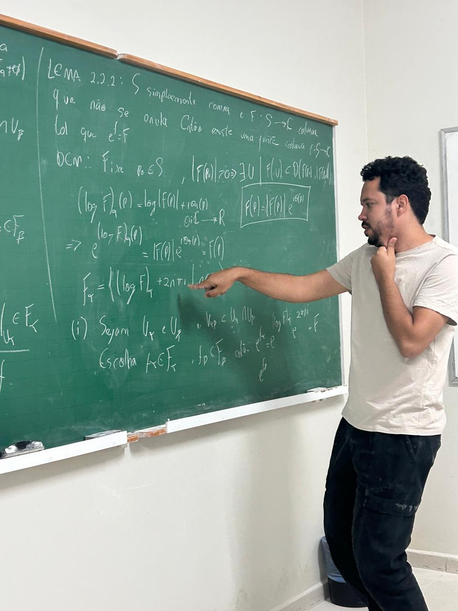

Academic supervision
Students
Master’s and PhD students · Graduate Program in Mathematics · UFPE
Current students
 Master’s degree
Master’s degreePedro Henrique Sales Vital
Research topic
Stability of Minimal Submanifolds in Riemannian Spheres Conformal to the Round Sphere
2026 – present · UFPE
FACEPE scholarship
Antônio Janael de Sousa Macedo
Research topic
To be determined
2026 – present · UFPE
CNPq scholarship

PhDLucas de Oliveira Rodrigues
Research topic
To be determined
2026 – present · UFPE
CAPES scholarship
Completed supervision
No completed supervision recorded to date.